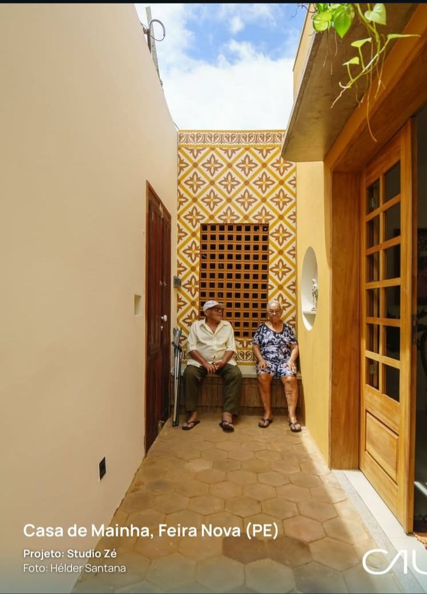

Da simplicidade ao topo do mundo: casa no interior do brasil conquista prêmio global.
Arquitetura
28/02/2026
localizada no interior de Pernambuco, conquistou um importante prêmio internacional de arquitetura ao valorizar a simplicidade.
Leandra Meireles.
Como funciona o MEC Livros, biblioteca digital pública e gratuita lançada pelo governo federal
Educação
07/04/2026
Acervo da plataforma tem quase 8 mil obras nacionais e internacionais, que incluem clássicos da literatura brasileira, obras premiadas, best-sellers e sucessos infantojuvenis. Aplicativo e site já estão disponíveis.
Leandra Meireles.
Tatiana Sampaio: A Cientista por trás da Descoberta Que Pode Devolver Movimentos a Humanos.
Pesquisa
16/02/2026
Pesquisadora dedica quase três décadas de pesquisa à polilaminina, molécula capaz de reverter lesões medulares e que recebeu sinal verde da Anvisa para testes em humanos. A descoberta, que pode transformar a vida de milhões, é um marco na ciência brasileira e mundial.
Leandra Meireles.
Novo medicamento aprovado pela anvisa promete retardar avanço do alzeimer em estágio iniciais
Saúde
09/01/2026
Um novo medicamento biológico indicado para retardar a progressão da doença de Alzheimer em estágios iniciais. A medicação é um anticorpo monoclonal que atua diretamente na causa da doença, reduzindo o acúmulo de placas beta-amiloides no cérebro
Leandra Meireles.